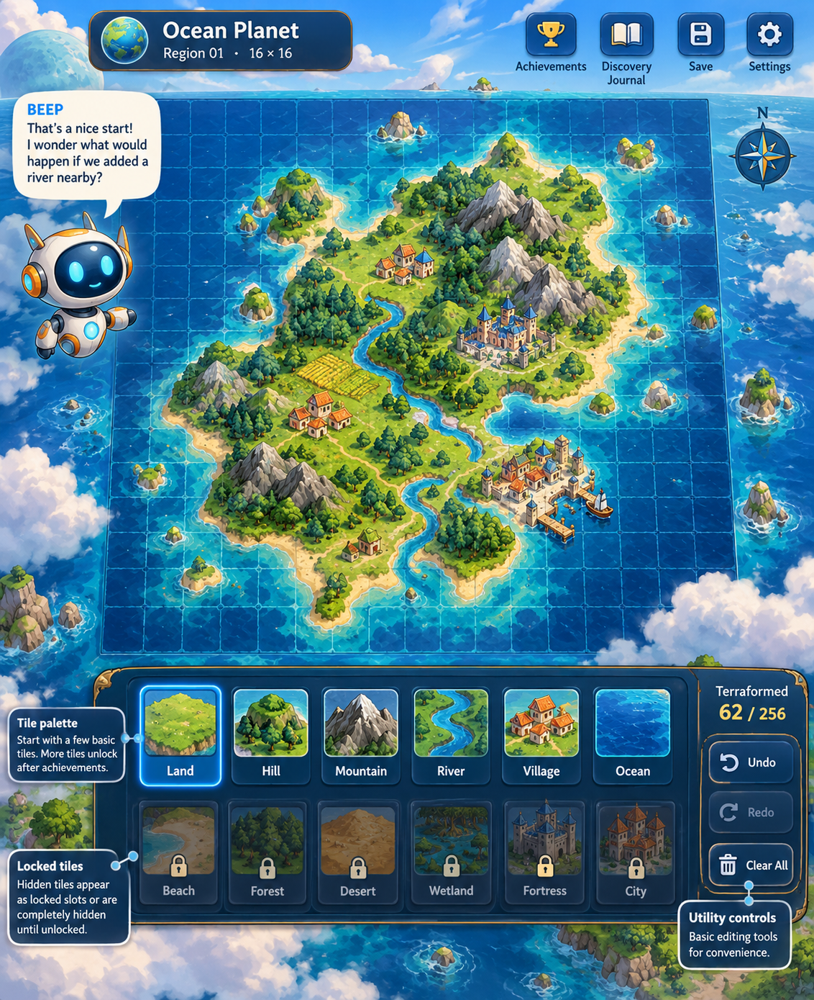
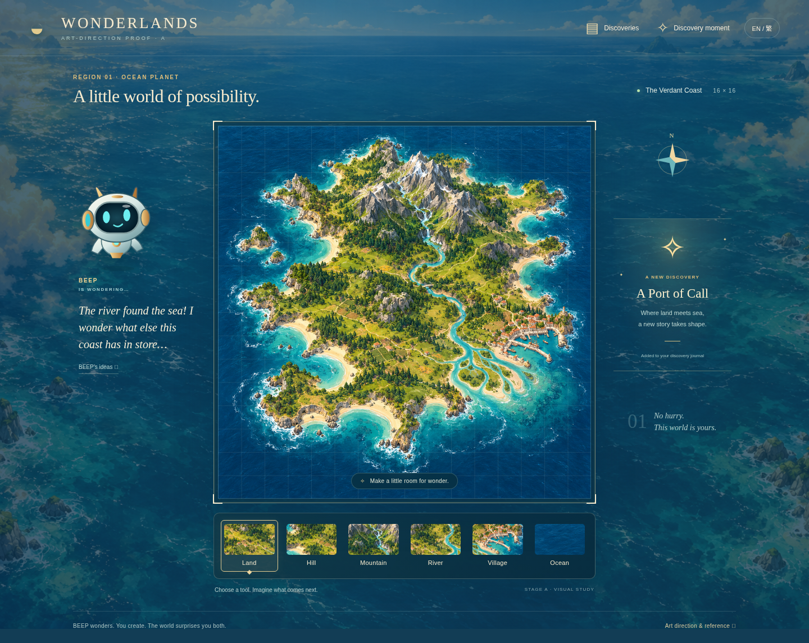
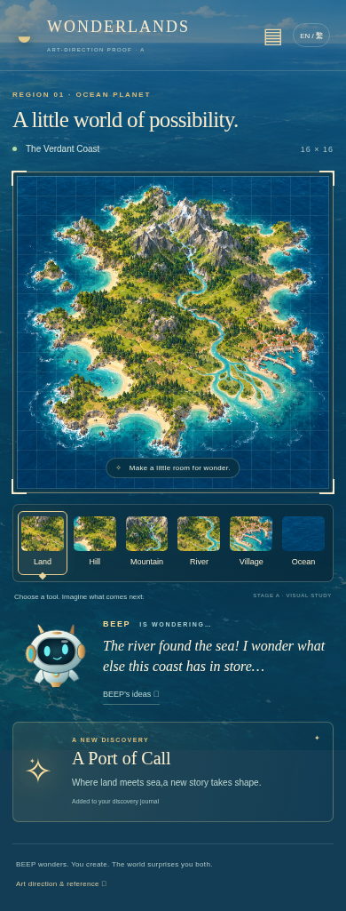

STAGE A · ONE COHESIVE ART DIRECTION
A living atlas, with room for wonder.
One visual language across desktop and mobile: illustrated relief, connected geography, an ocean that surrounds the interface, and a companion who notices possibilities.
Provided concept

Wonderlands · Desktop proof

Mobile

Preserved
- Lush illustrated relief, sandy foam-edged coasts, connected mountain masses and a continuous river reaching a coastal settlement.
- Ivory-and-brass BEEP with expressive cyan eyes and optional curiosity, rather than an assignment.
- Sea and atmosphere around the board; crisp interaction bounds inside the environment.
- Six visible starting tools and a warm, unobtrusive discovery moment.
Intentional deviations
- A more top-down atlas view makes drawn silhouettes easier to recognize.
- A lighter grid and quieter brass trim leave the landscape dominant.
- No catalogue of locked tools or exposed future discoveries.
- Mobile reflows the companion and discovery card instead of shrinking desktop sidebars.
This is a fixed art study with presentation interactions. Content-aware editing, reverse transformations, persistent discoveries, and full EN/zh-TW gameplay are Stage B work after approval. The accepted illustration is a quality baseline, not a substitute for an editable renderer.